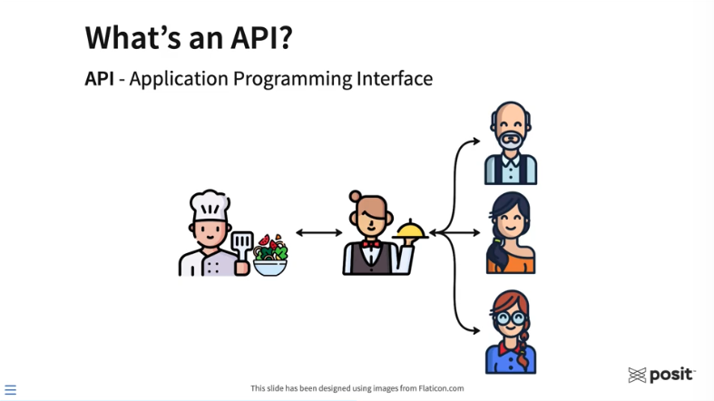
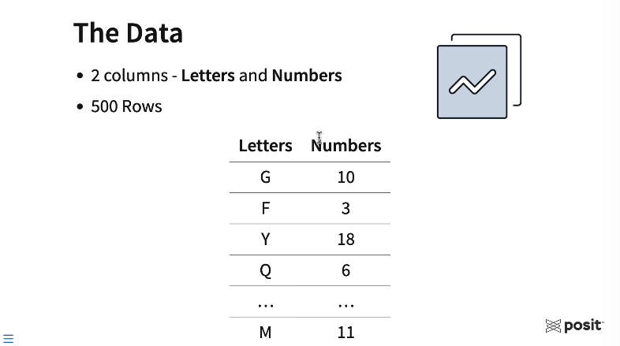
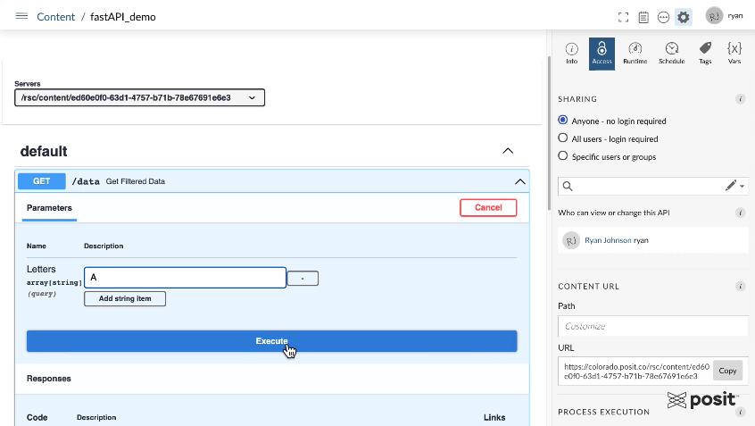
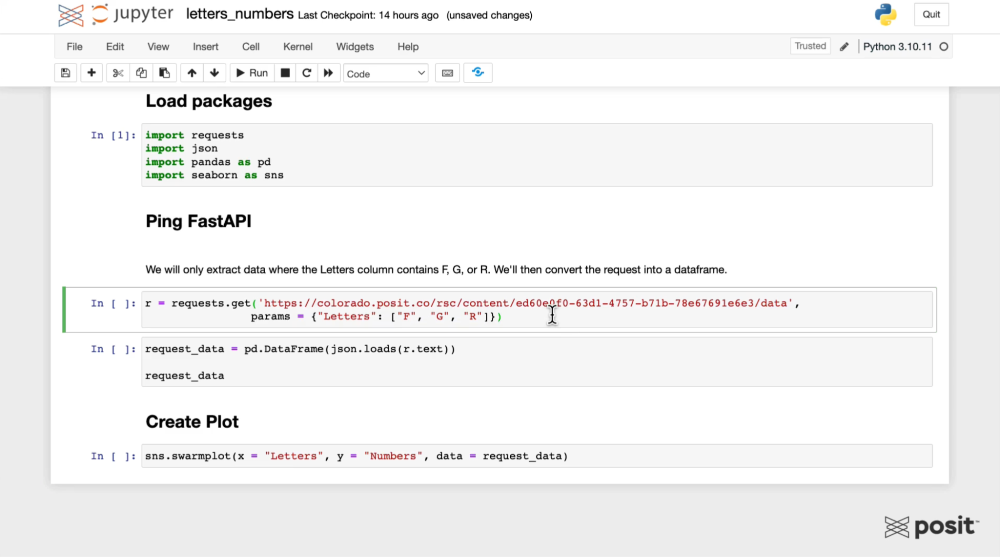
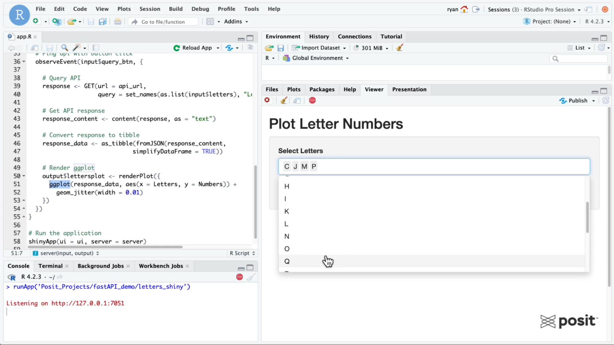

2023-07-26
Imagine you’re in a meeting and presenting on customer churn numbers for the prior month. The scheduled report you emailed to the executives earlier this morning has one number, but the app your colleague is viewing has a completely different number. Uh oh!
Our goal: Ensure our data science team is using the same updated dataset for the content shared with our leadership team, regardless of the language they work in.
There are a lot of ways to do this.
With this end-to-end workflow, we’ll highlight why and how you could use an API for this workflow - which allows you to make data transformations or new predictions on the fly that would be difficult to do in a database.
In this blog post, we’ll walk through how to create a FastAPI and demonstrate how it can serve as a “data gateway” for multiple pieces of content, including a Jupyter Notebook and a Shiny app hosted on Posit Connect.
The acronym API stands for “Application Programming Interface,” which allows for application communication (that’s fun to say 🙂).
For some, working with APIs for the first time can be intimidating. We hope this blog post will ease any fears and show how APIs can vastly improve your data science workflows.
The restaurant analogy is commonly used to help explain APIs.

Above, the three customers on the right have entered a restaurant and would like to order some food that the chef will prepare. To request food, the customers need some way to communicate their order to the kitchen. Generally, a customer would never interact directly with the chef. That’s where the waiter or waitress comes into play. They take the order from the customer and can communicate that order to the chef. The chef prepares the food, which is then delivered to the customers. In this analogy, the waiter or waitress allows for communication between the customers and the chef. Essentially, they are the API.
For data scientists, APIs can be a useful workflow building block that gives other users, applications, or systems the ability to interact with the functions you’ve designed, the models you’ve trained, or the data you’ve curated.
You don’t need to be a software engineer or computer scientist to create an API. There are numerous frameworks in both R and Python for creating APIs, including Plumber, Flask, and FastAPI.
Why would you want to use an API as a gateway to your data?
Follow along with our end-to-end workflow:
For this workflow, we’ll use VS Code from within Posit Workbench to develop a FastAPI in Python. For simple demo purposes, this API will be designed to do only one thing - serve data. We’ll then publish this FastAPI to Posit Connect and show how it can serve as a gateway to your data which can be accessed by multiple pieces of content using Python, R, or any other language or system!
FastAPI is one of the most popular frameworks for creating APIs using Python, given its simplicity and performance. The FastAPI in this example will serve as a gateway to our data which various content types can access.
The data is synthetic and is comprised of 500 rows and two columns. The first column is a random letter in the English alphabet, and the second is a random number from 1 to 20.

Going through this example, think about where your own data lives today. In this workflow, our data will live in a local CSV file. Your data may live in a database, a shared network drive, or maybe as a pin. By using an API, no matter where the data lives, you can standardize how the data is accessed across your various pieces of content and your entire data science team.
You can access the code used to create this FastAPI example on GitHub here: https://github.com/ryjohnson09/fastAPI_demo
With less than 20 lines of code below, you can create this simple “data gateway” FastAPI.
from fastapi import FastAPI, Query
from typing import List
import pandas as pd
app = FastAPI()
# Mock data
large_df = pd.read_csv("data.csv", index_col=0)
@app.get("/data")
async def get_filtered_data(Letters: List[str] = Query(default=None)):
if Letters:
filtered_df = large_df[large_df["Letters"].isin(Letters)]
return filtered_df.to_dict(orient="records")
else:
return large_df.to_dict(orient="records")To explain the code above:
app in this example.pd.read_csv() function from pandas and store that data frame as a variable called large_df.@app.get section above defines the API endpoint (an endpoint takes in the API request, which is usually a URL, processes it, and sends back a response.) This FastAPI example uses a GET method for the endpoint, which is routinely used to read data. The forward slash followed by the word data tells the FastAPI that anything following /data in the request URL are parameters to the API, which can be fed into the function directly below.get_filtered_data and takes a single argument called “Letters.” Letters are captured as a list of strings when the API is queried. It’s also an optional query item and defaults to “None” if no letters are provided. Reading this code left to right, top to bottom, it starts by asking if the query contained any letters. If yes, the data is filtered for those specific letters and returned by the function. If no letters are provided, it simply returns the entire dataset.To ensure the work done here is isolated from other projects on Posit Workbench, create a virtual environment in your directory in VS Code. To learn about virtual environments in more detail, check out this resource on our Solutions site.
To activate your virtual environment in this directory, start a new terminal session and type source .venv/bin/activate in the terminal, and hit Enter.
Create a new Python file for the API (called main.py) and place it in the current working directory. Paste in the above FastAPI code.
To publish this FastAPI to Posit Connect, use rsconnect-python, which provides a command line interface for deploying content to Posit Connect.
The command to deploy this FastAPI is:
rsconnect deploy fastapi -n "name of your server" . main.pyThis tells rsconnect to deploy a FastAPI (rsconnect deploy fastapi) and then indicates which Posit Connect instance to deploy to. The environment in the demo video has the name pct_prod but the name of your server would replace this. For more information on saving Posit Connect information to your environment, check out the docs here.
Finally, provide the name and location of the FastAPI. The main.py file lives in the current working directory, which is indicated with a . and then the file’s name.
After running this command, the rsconnect-python package takes a snapshot of the environment, including the packages, package versions, and python version. It sends that information from Posit Workbench to Connect, and Connect replicates the environment and deploys the FastAPI.
Once the API is deployed, we can interact with the FastAPI on Connect using a Swagger interface shown below.

The FastAPI has one GET endpoint. You can test querying it using various letters in the alphabet, and see the resulting API response. For example, enter the Letter “A” to extract all A rows in the dataset.
Once we hit the “Execute” button, the Swagger interface will show you the curl command that was run to ping the API, the request URL, and we can see our response in a JSON format with each row of the data being a chunk of the JSON file.
A major benefit of APIs hosted on Posit Connect is that you can manage who has access to it. If you require authentication for sensitive data, then API users would need to provide an API key which can be created in the Posit Connect user interface.
Now that we have the FastAPI hosted on Connect, it can be used as a gateway for multiple pieces of content using both R and Python!
Open up a Jupyter Notebook in Posit Workbench:

Load the necessary libraries, including the requests library, which is needed to ping the FastAPI.
Use the requests library to generate a GET request using the URL from the Swagger interface for the FastAPI. Pass in some parameters to only extract certain letters, for example, F, G, and R as shown above.
Next, convert the API JSON response to a data frame using pandas and plot the data using the seaborn Python library.
Notice that we were not required to upload and filter the data manually; the FastAPI handles that for us!
Open up an RStudio session in Posit Workbench. The full code for the Shiny app is included below:
library(tidyverse)
library(shiny)
library(jsonlite)
library(httr)
# Set API base URL
api_url <- "https://colorado.posit.co/rsc/content/ed60e0f0-63d1-4757-b71b-78e67691e6e3/data"
# Define UI ----------------------------
ui <- fluidPage(
titlePanel("Plot Letter Numbers"),
sidebarLayout(
sidebarPanel(
# Select letters
selectInput(
inputId = "letters",
label = "Select Letters",
choices = LETTERS,
multiple = TRUE),
# Action button
actionButton("query_btn", "Query API"),
),
mainPanel(plotOutput("lettersplot"))
)
)
# Define server logic -----------------------------
server <- function(input, output) {
# Ping api with button click
observeEvent(input$query_btn, {
# Query API
response <- GET(url = api_url,
query = set_names(as.list(input$letters), "Letters"))
# Get API response
response_content <- content(response, as = "text")
# Convert response to tibble
response_data <- as_tibble(fromJSON(response_content,
simplifyDataFrame = TRUE))
# Render ggplot
output$lettersplot <- renderPlot({
ggplot(response_data, aes(x = Letters, y = Numbers)) +
geom_jitter(width = 0.01)
})
})
}
# Run the application
shinyApp(ui = ui, server = server)To query the API, it will be important to load the httr package and to convert the API response to a data frame using the jsonlite package. The data frame is then converted to a tibble for ggplot2 to create a similar plot from the Jupyter Notebook in the earlier step.
To ping the FastAPI, we need to supply the Shiny app with the API URL, which is saved as a variable called api_url.

Similar to the Jupyter Notebook example, pass in some parameters to the Shiny app to only extract data for certain letters. Now you can see how it’s possible to ping the same API and access the same dataset from different content types written in two separate languages!
This example covered deploying a FastAPI to Posit Connect to standardize access and ensuring consistent data in data products, but there are endless workflows for Posit Team.
We’d love to have you join us at one of our monthly Posit Team Demos, where we walk through a different end-to-end data science workflow each month. They are on the last Wednesday of every month at 11 am ET on YouTube. You can add the event to your calendar here: pos.it/team-demo
Each demo is recorded, so you can also access past sessions here:
If you have any questions and would like to talk with our team, you can schedule a time to chat here.
Interested in learning more about data workflows in Python or R? Join us at posit::conf(2023)! We have an amazing array of workshops and talks lined up. If you found this post interesting, check out these two options: